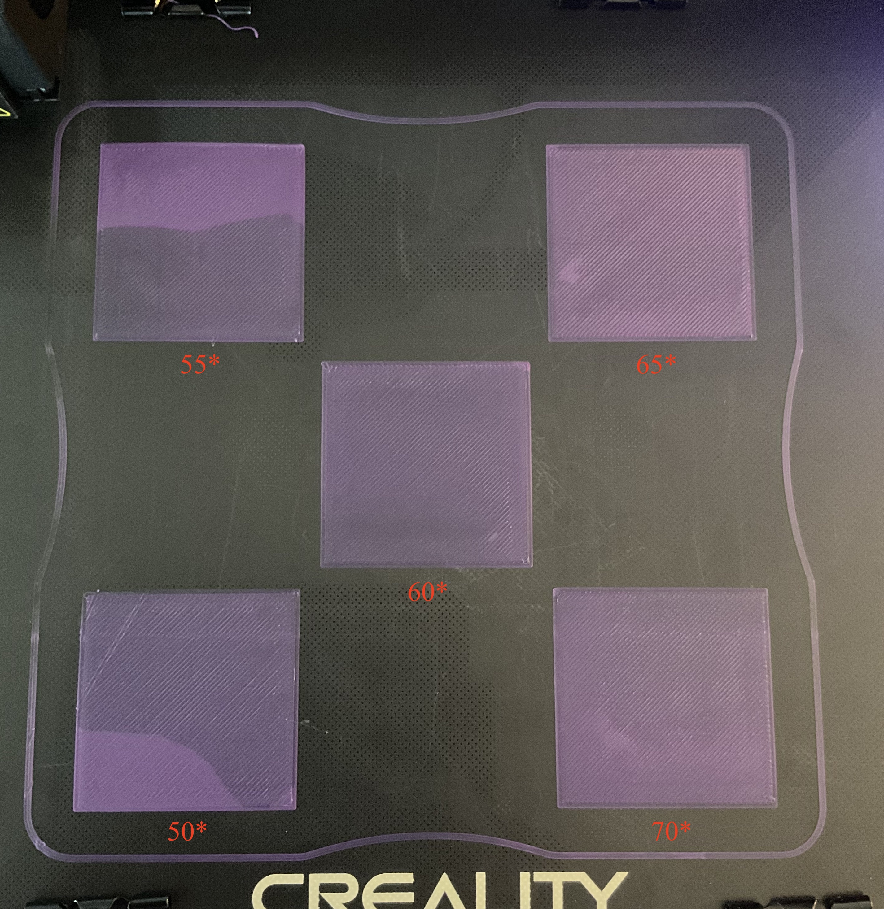
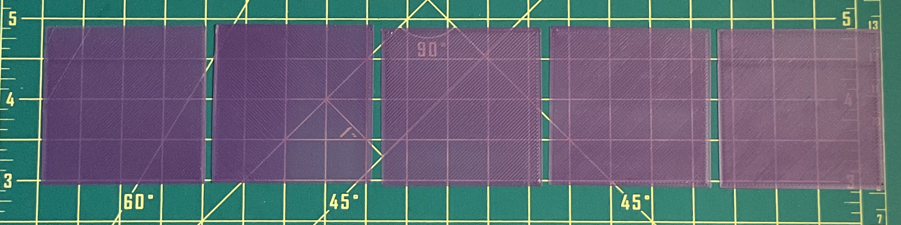

more bed temp explorations
In some of my first tests I noted that bed temperature was a notable variable for adhesion. As I stumble into more & more calibration prints (bed leveling, extruder calibration, stress tests...) I found there wasn't much info on testing bed temperatures. Generally, too low a bed temp means no adhesion, too high means bulged first layer. I printed 5 50mmx50mm calibration squares simultaneously, manually increasing the bed temperature in 5* increments after each print (I know the M140 command will rapid change bed temp... but manual was easier for this quick test as I gain gcode literacy :/). The bed will expand as it heats up, so printing them all at the same time is perhaps not the best idea- but I wanted to quickly test if they adhered at all.


I was a bit surprised to find that all of these prints adhered pretty well. It does look as though my nozzle is a bit too close though, something that didn't surface in e.g. the CHEP bed leveling tests. This speaks a bit to the trouble of isolating a single variable; I should probably recalibrate manually and try again. It also seems pretty dependent on the geometry of what's being printed, since a large surface are will adhere better. In any case, this suggests keeping my initial bed temp somewhere closer to 60-65* to avoid any bulging of the PLA.
In hcde533 class, we started learning Grasshopper, along with flexures, compliant mechanisms, and other good stuff. As a lover of a satisfying snap and click, I am excited to make flexures and am inspired by things like this. I made a very simple little cardboard clip to start out with. It will be fun to deal with printer calibration in practice as I make things that need to be dimensionally accurate.